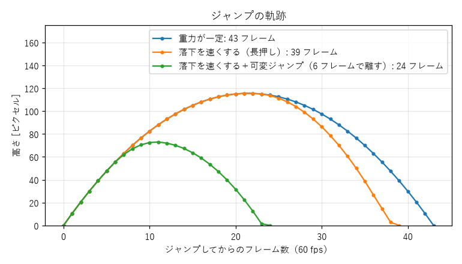

7. 操作感とフィードバック
同じルールのゲームでも、操作したときの手触りによって面白さは大きく変わる。キャラクターが入力にきびきびと反応し、行動の結果が気持ちよく返ってくるゲームは、それだけで触っていて楽しい。この章では、操作感を作る要素と、その代表例としてジャンプの設計を扱う。
7.1. ゲームフィール
ゲームデザイナーのスティーブ・スウィンクは、操作したときの手触りや感触をゲームフィールと呼び、次の 3 つの要素から成り立つと説明した。
要素 |
内容 |
|---|---|
リアルタイムの操作 |
プレイヤーの入力が、途切れることなく即座にゲームの中の動きに反映される |
模擬された空間 |
キャラクターが動き回り、物とぶつかり合う、ゲームの中の物理的な空間 |
磨き上げ |
動きを強調する演出。アニメーション、効果音、画面の揺れなど |
操作感の多くは、仕様書の 1 行では表せない細かな数値と処理の積み重ねで決まる。エンジニアが実装の段階で決めることも多く、ゲームデザインとプログラミングの境目にある領域といえる。
7.2. 応答性
操作感の土台は、入力に対する応答の速さである。ボタンを押してから画面上で反応が見えるまでの時間を入力遅延と呼ぶ。
60 fps（1 秒間に 60 回画面を更新する）のゲームでは、1 フレームは約 16.7 ms である。入力の読み取り、ゲームの更新、描画、ディスプレイへの表示にそれぞれ時間がかかるため、実際の入力遅延は数フレーム分になることが多い。遅延が大きくなると、プレイヤーはキャラクターが重い、思いどおりに動かないと感じる。特に、タイミングの厳しいアクションゲームやリズムゲームでは、遅延をできるだけ小さくする必要がある。
応答性は、キャラクターの加速と減速の設計にも左右される。ボタンを押した瞬間に最高速度になるキャラクターは機敏に感じられ、ゆっくり加速するキャラクターは重さや慣性を感じさせる。どちらがよいかは作りたい体験による。ただし、加速や減速に時間がかかりすぎると、プレイヤーは自分の入力が無視されたように感じる。
7.3. ジャンプを設計する
ジャンプは、アクションゲームの操作感を最もよく表す動作である。ここでは、ジャンプの基本となる物理と、操作感をよくするための 4 つの工夫を、サンプル jump_feel.py で確かめながら説明する。
7.3.1. ジャンプの高さと滞空時間
重力加速度を \(g\)、ジャンプの初速を \(v_0\) とすると、空気抵抗を無視した場合のジャンプの最高到達点の高さ \(h\) と、地面に戻るまでの滞空時間 \(T\) は次の式で表せる。
ゲームでは、物理的に正しい値よりも、遊びやすい高さと滞空時間から逆算して \(v_0\) と \(g\) を決めることが多い。上の 2 式から、高さ \(h\) と頂点までの時間 \(t_{\text{peak}} = T / 2\) を決めれば、次のように求められる。
jump_feel.py では、1 フレームごとに速度に重力を加え、位置に速度を加える方法で動きを計算している。初速は 1 フレームあたり 11 ピクセル、重力は 1 フレームごとに速度を 0.5 ずつ増やす値なので、最高到達点は上の式で 121 ピクセルになる。実際には 1 フレームごとの離散的な計算になるため、最高到達点は約 115 ピクセルと、式の値より少し低くなる。
7.3.2. 操作感をよくする 4 つの工夫
物理的に正しいだけのジャンプは、遊んでみると意外に扱いにくい。多くのアクションゲームでは、次のような工夫を加えている。
工夫 |
内容 |
解決する問題 |
|---|---|---|
コヨーテタイム |
足場の端から落ち始めた直後の数フレームは、まだジャンプを受け付ける |
端ぎりぎりで跳んだつもりが、1 フレーム遅れて跳べずに落ちる |
先行入力（ジャンプバッファ） |
着地の少し前に押されたジャンプを覚えておき、着地した瞬間に跳ぶ |
着地の直前に押したジャンプが無視される |
可変ジャンプ |
ボタンを早く離すと、上昇を早めに打ち切って低く跳ぶ |
ジャンプの高さを調整できない |
落下を速くする |
落下中だけ重力を強くする |
頂点付近でふわふわと浮いたように感じる |
コヨーテタイムという名前は、アメリカのアニメーションで、崖から走り出たコヨーテが、下を見て気付くまで空中に留まってから落ちる場面にちなむ。
これらの工夫に共通するのは、プレイヤーの「意図」を汲み取るという考え方である。足場の端から 1 フレーム遅れてジャンプボタンを押したプレイヤーは、ジャンプしようとしていた。コンピューターにとっては 1 フレームの差でも、人間にとってはほぼ同時である。厳密な判定よりも、プレイヤーの意図に沿った判定のほうが、操作が正確だと感じさせる。
リスト 7.1 は重力の処理、リスト 7.2 はジャンプの判定の処理である。
83def apply_gravity(vy: float, jump_held: bool, settings: JumpSettings) -> float:
84 """1 フレーム分の重力を速度に加える。"""
85 gravity = GRAVITY
86 if vy > 0 and settings.heavy_fall:
87 gravity *= FALL_GRAVITY_SCALE
88 elif vy < 0 and settings.variable_jump and not jump_held:
89 gravity *= LOW_JUMP_GRAVITY_SCALE
90 return min(vy + gravity, MAX_FALL_SPEED)
129 def _update_jump(self, inp: InputState, settings: JumpSettings) -> None:
130 if inp.jump_pressed:
131 # 先行入力が OFF のときは、押したフレームだけ有効にする。
132 self.buffer_frames = BUFFER_FRAMES if settings.jump_buffer else 1
133 can_jump = self.on_ground or (settings.coyote_time and self.air_frames <= COYOTE_FRAMES)
134 if self.buffer_frames > 0 and can_jump:
135 self.vy = -JUMP_SPEED
136 self.on_ground = False
137 self.buffer_frames = 0
138 self.air_frames = COYOTE_FRAMES + 1 # 空中でもう一度跳べないようにする
139 self.buffer_frames = max(0, self.buffer_frames - 1)
air_frames は足場を離れてからのフレーム数、buffer_frames は先行入力の残りフレーム数である。足場の上にいるか、足場を離れてから COYOTE_FRAMES フレーム以内であればジャンプできる。ジャンプボタンが押されると buffer_frames に BUFFER_FRAMES を設定し、その間にジャンプできる状態になれば跳ぶ。
次の図は、工夫の有無によってジャンプの軌跡がどう変わるかを、jump_feel.py に --plot と保存するファイル名を指定して（例：python jump_feel.py --plot jump.png）描いたものである。

図 7.1 ジャンプの軌跡の比較
重力が一定の場合、上昇と落下は左右対称になる。落下を速くすると、頂点の高さは変わらないまま落下にかかる時間が短くなり、きびきびとした印象になる。可変ジャンプでボタンを 6 フレームで離すと、低く短いジャンプになる。
7.3.3. デモを動かして確かめる
jump_feel.py を引数なしで実行すると、4 つの工夫を 1〜4 の数字キーで個別に ON / OFF できるデモが起動する。
1python jump_feel.py
← → で移動、Space でジャンプする。穴に落ちるとスタート地点に戻る。キャラクターは、足場の上では水色、コヨーテタイムの猶予中は黄色、それ以外の空中では橙色で表示される。すべての工夫を OFF にしたときと ON にしたときで、穴を跳び越えたり段差を上ったりする操作の感触を比べてみてほしい。
走りながら最初の穴を跳び越えるとき、ジャンプボタンを押すのが遅すぎると穴に落ちる。コヨーテタイムが OFF なら足場の端を越えた時点で跳べなくなるが、ON なら端を越えてからも 6 フレーム（60 fps で 0.1 秒）は跳べる。プレイヤーがこの差を数字で意識することは無いが、「押したはずなのに落ちた」と感じる頻度は大きく変わる。
7.4. 視覚と聴覚のフィードバック
プレイヤーの行動に対して、ゲームが見た目と音で反応を返すことも、操作感の大きな要素である。ゲーム開発者のマーティン・ヨナソンとペトリ・プルホは、こうした演出を重ねてゲームの手触りを豊かにすることを「ジュース（果汁）を加える」と表現した。2012 年の 2 人の講演「Juice it or lose it」はよく知られている。
演出 |
内容 |
|---|---|
ヒットストップ |
攻撃が当たった瞬間に、ゲームの進行を数フレームだけ止める。打撃の重さが強調される |
画面の揺れ |
爆発や強い攻撃のときに画面を小さく揺らす |
つぶれと伸び |
着地の瞬間にキャラクターを横につぶし、跳ぶ瞬間に縦に伸ばす。動きに弾力が生まれる |
パーティクル |
着地の砂ぼこり、攻撃の火花など、細かな粒子を飛ばす |
効果音 |
行動ごとに異なる音を鳴らす。連続する音は高さを少しずつ変えると単調にならない |
振動 |
コントローラーを振動させて、衝撃を手に伝える |
これらの演出は、ルールを何も変えずに操作感を大きく向上させる。ただし、演出は多ければよいわけではない。画面の揺れや点滅が強すぎると、画面が見にくくなるうえ、気分が悪くなるプレイヤーもいる。演出の強さを設定で調整できるようにしておくと、第 6 章で述べたアクセシビリティの面でも望ましい。
7.5. UI と情報の提示
プレイヤーに状況を伝える画面上の表示を UI（ユーザーインターフェース）と呼ぶ。体力、残り時間、地図のように、ゲームの画面に重ねて常に表示する UI は、特に HUD（ヘッドアップディスプレイ）と呼ばれる。
エリック・ファーゲルホルトとマグヌス・ロレンツォンは、UI を、ゲームの世界の中に存在するかどうかと、ゲームの空間の中に置かれているかどうかによって、次の 4 種類に分けた。
種類 |
内容 |
例 |
|---|---|---|
ダイエジェティック |
ゲームの世界の中に実在し、登場人物にも見えている |
登場人物が手に持つ地図、車のスピードメーター |
ノンダイエジェティック |
ゲームの世界の外にあり、画面に重ねて表示される |
画面の隅の体力ゲージ、得点 |
空間的 |
ゲームの空間の中に表示されるが、登場人物には見えていない |
地面に描かれた目的地への矢印、敵の頭上の体力ゲージ |
メタ |
ゲームの世界の出来事を、画面全体の効果で表す |
体力が減ると画面の端が赤くなる |
ゲームの世界の中に UI を溶け込ませると没入感が高まるが、情報を読み取りにくくなることもある。どの情報をどの方法で伝えるかは、その情報がどのくらい重要か、どのくらい頻繁に確認されるかで決める。
UI を設計するときは、次の点を確認するとよい。
判断に必要な情報が、判断が必要なときに見えているか。
重要な情報ほど目立つ位置と大きさになっているか。
同時に表示する情報が多すぎないか。
第 6 章で述べたように、危険の予告になっているか。敵の次の行動が予想できると、プレイヤーは失敗を公平だと感じる。
7.6. 演習
jump_feel.pyで 4 つの工夫を 1 つずつ OFF にして遊び、それぞれが無いとどのような場面で困るかを書き出せ。jump_feel.pyのJUMP_SPEEDとGRAVITYを変更し、最高到達点の高さを変えずに頂点までの時間を短くせよ。式で値を求めてから、実際に動かして確かめること。好きなアクションゲームを 1 つ選び、手触りをよくする演出を 5 つ以上見つけて書き出せ。
好きなゲームの画面に表示されている UI を、4 種類に分類せよ。